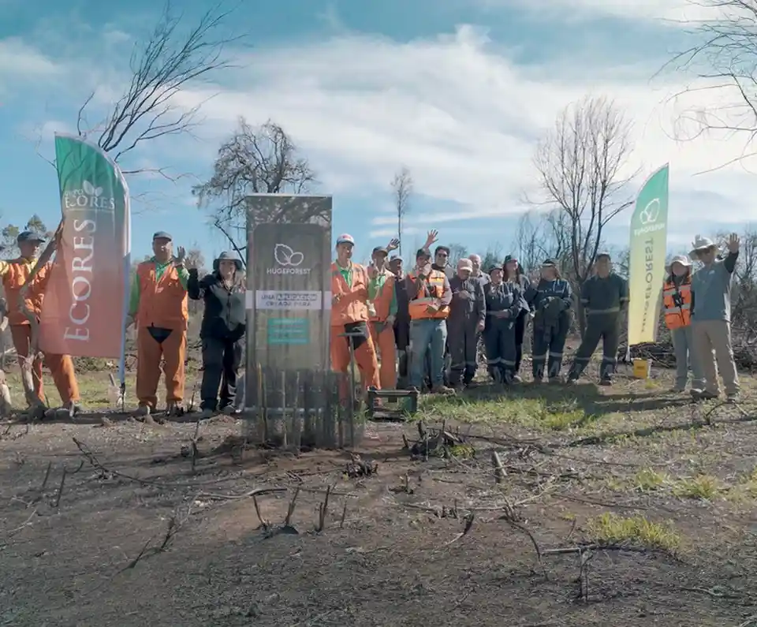
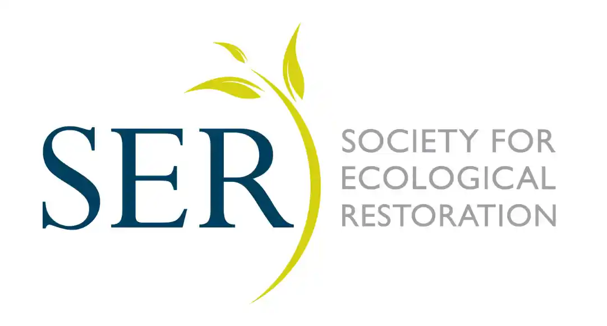

Diagnóstico y planificación ambiental
Grupo ECORES · Servicios para el bosque nativo
Construimos soluciones para la conservación y la sustentabilidad de los ecosistemas
Integramos ciencia, innovación y experiencia en terreno para desarrollar proyectos de conservación, restauración ecológica, cambio climático y gestión sostenible del territorio.
Quiénes somos
Cinco empresas, una respuesta integrada
Los proyectos de restauración ecológica requieren continuidad entre diagnóstico, diseño, producción vegetal, implementación y seguimiento. Cuando estas etapas quedan desconectadas, aumentan los riesgos técnicos, operativos y de cumplimiento.
Grupo ECORES articula empresas especializadas para abordar ese proceso con mayor coherencia: respaldo técnico-regulatorio, plantas adecuadas, investigación aplicada y capacidad real de trabajo en terreno.
Conoce cómo funciona nuestro ecosistema →
Trayectoria
Experiencia aplicada en terreno
Indicadores que permiten mostrar escala territorial, capacidad productiva, experiencia acumulada y presencia operativa.
+800
Hectáreas intervenidas o gestionadas
+1 millón
Plantas producidas o establecidas
+60
Proyectos desarrollados con empresas e instituciones
6
Regiones del país donde hemos desarrollado proyectos y operaciones
Áreas de trabajo
Capacidades para cada etapa del proyecto
Desde el primer estudio hasta la planta establecida en terreno, reunimos capacidades técnicas, productivas, científicas y operativas.
Restauración, reforestación y compensaciones
Diseño e implementación de medidas orientadas a recuperar ecosistemas y responder a requerimientos ambientales.
Ver más →Estudios, monitoreo y planificación ambiental
Líneas base, monitoreos, cartografías, informes de cumplimiento, fiscalización, planes de trabajo y planes de manejo.
Ver más →Producción vegetal nativa
Producción y comercialización de plantas para proyectos de restauración, instituciones y público general.
Ver más →Investigación e innovación aplicada
Generación de evidencia, desarrollo de metodologías y soluciones con impacto concreto y verificable.
Ver más →Ecosistema Grupo ECORES
Cinco unidades, una misma solución
Cada empresa cumple un rol específico dentro del ecosistema. Según las necesidades del proyecto, estas capacidades pueden articularse de manera conjunta o independiente.
Capacidades integradas para todo el ciclo de proyectos ambientales
Ejecución y restauración en terreno
Producción de plantas nativas
Articulación e innovación territorial
Investigación aplicada y transferencia
Sectores
Experiencia en distintos sectores
Trabajamos junto a empresas, instituciones y propietarios que requieren soluciones de restauración, reforestación o compensación ambiental técnicamente respaldadas y viables de implementar.
Respaldo técnico
Restauración con criterios reconocidos internacionalmente
Nuestro trabajo se orienta por principios de restauración ecológica ampliamente reconocidos, como los estándares de la Society for Ecological Restoration, que promueven planificación técnica, referencia ecológica, monitoreo y evaluación de resultados.
Estos criterios permiten abordar la restauración como un proceso que no termina en la plantación, sino que requiere seguimiento, aprendizaje y ajuste según las condiciones del sitio.

Contacto
¿Tienes un proyecto de restauración o compensación ambiental? Hablemos.
Cuéntanos tu desafío. Te orientaremos hacia la empresa del grupo —o la combinación de ellas— que mejor se adapte a lo que necesitas.